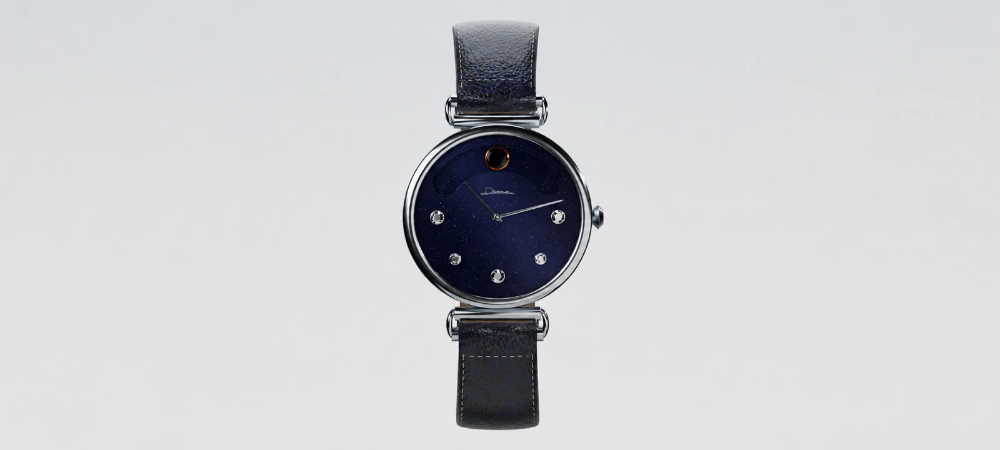
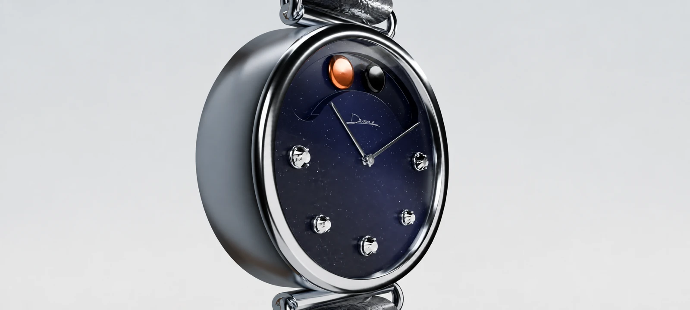
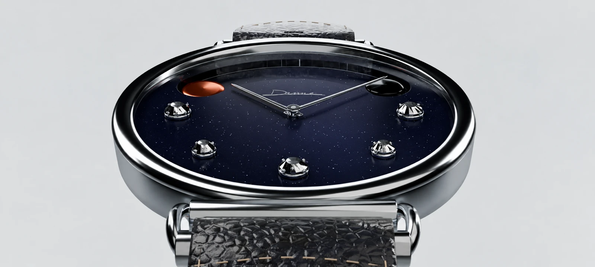

[ 03 ]
HORLOGERIE 3D
2026
MODÉLISATION ET ANIMATION 3D D’UNE MONTRE POUR DANNE STUDIO. UNE MISE EN VALEUR DU CADRAN ÉTOILÉ, DU CUIR ET DE L’ACIER À TRAVERS DES JEUX DE LUMIÈRE ET DES MOUVEMENTS DE CAMÉRA.
- MODÉLISATION
- ANIMATION
- RENDU
- COMPOSITING
- COLOR GRADING
LOGICIELS : BLENDER / AFTER EFFECTS


